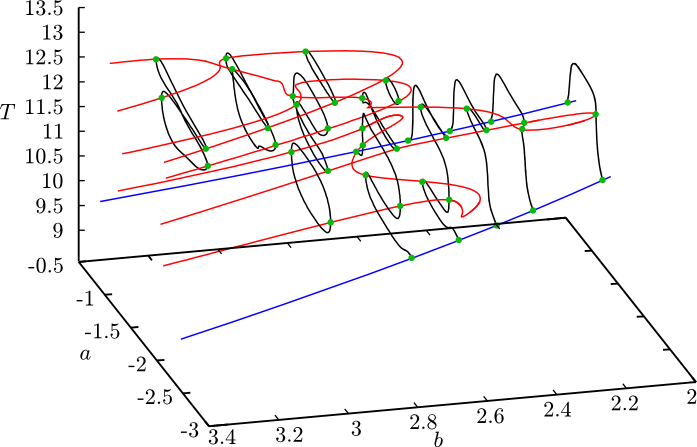

A numerical continuation software
The software is designed to analyse explicitly time-dependent delay-differential equations with time dependent delays of the form \[ \boldsymbol{M}\,\dot{\boldsymbol{x}}(t) = \boldsymbol{f} (t, \boldsymbol{x}(t-\tau_0(t)), \boldsymbol{x}(t - \tau_1(t)), \dots , \boldsymbol{x}(t - \tau_m(t))) \] The mass matrix $\boldsymbol{M}$ can be singular, hence Knut can handle algebraic equations and neutral delay-differential equations. State dependent delays are not yet supported, see DDE-BIFTOOL for that.
The features include
Significant differences from DDE-BIFTOOL
The Graphical User Interface also includes a plotting tool that displays the calculation live.
The Mackey-Glass equation \[\dot{x} ( t ) = ax ( t ) + b \frac{x ( t - \tau )}{1 + x^{10} ( t - \tau )}\] is represented by the following code
vfname()=mackey_glass;
time()=t;
period(T)=2.0;
par(a)=-1.0;
par(b)=1.5;
par(tau)=2.0;
DX=delay(X,tau);
dot(X)=a*X + b*DX/(1+DX^10);
init(X)=((1.0-1.5)/(-1.0))^(1.0/10.0);
See the Users' manual
Dependencies are OpenBLAS, CMake and optionally Qt
To build the software use the following commands:
git clone https://github.com/rs1909/knut.git
cd knut/knut
mkdir build
cd build
../build-unix.sh
make installOn Mac OSX replace the penultimate command with ../build-mac.sh
To make an installable package use make install and make dmg which will produce a disk image
On Fedora Linux with the MinGW cross-compiler installed the ../build-win-cross.sh will compile the software for Windows.
To make a package use makensis wininstaller.nsi.
Please report any bugs and wishes on the issue tracker, I'll try to address them as my time allows it.